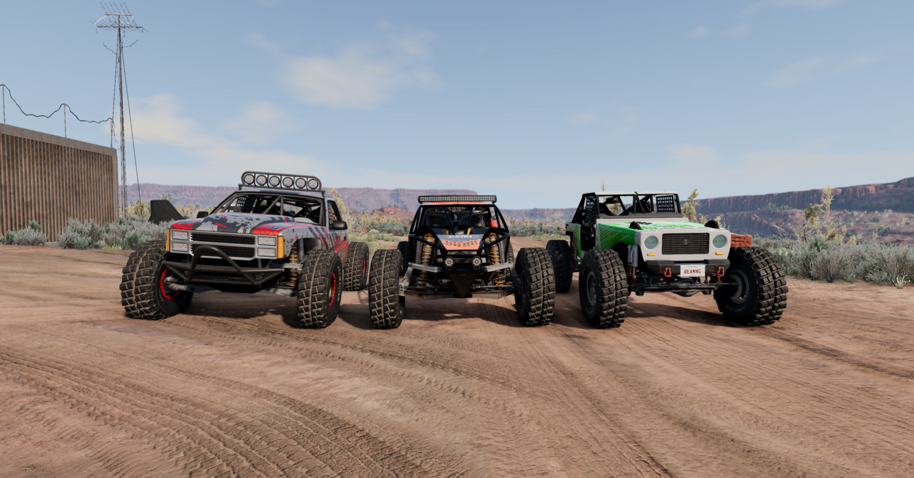

Rock Racer Comparison
Off-roading is fun. But some off-roaders are not. Different off-roaders suit different needs. In today's test, we tested three off-roaders - the Gavril D-Series, the SP Rockbasher, and the Ibishu Hopper. All three were tested in the Rock Racer configurations. For the first test, all three were driven up a hill near the Parking Lot spawn point in Utah. The D-Series fared the best. It climbed the hill relatvely easily. The Rockbasher proved to be a little too light, flying into the air and falling backwards, losing its spare tire in the process. However, it succeeded in climbing the hill as well. The Hopper didn't do as well, falling back many times and finishing up high-centered on a rock near the top of the hill. It showed that it was extremely prone to rolling over and falling on its top. The other test was a cross-country run through an area interspersed with rocks. The D-Series again came out on top, only having one rollover during the whole run, while the Hopper proved the observations I made during the first test, rolling over 3-4 times. The Rockbasher spent less time on its top than the Hopper, but it took more internal damage (it got bashed by rocks).
Summary:
Gavril D-Series
Pros:
- Heavier and harder to roll
- Plenty of power
- Rugged
Cons:
- Not very much speed
- Harder to maneuver
- Too heavy for the toughest terrains
For most off-roading, this one's hot. It might be a bit too heavy for tougher terrains though.
SP Rockbasher
Pros:
- Light
- Plenty of power
- Better on the toughest terrains
Cons:
- Too much speed
- Easy to damage
- Not enough protection
For a car called "Rockbasher", this is a disappointment. However it might still be the best option for the toughest terrains.
Ibishu Hopper
Pros:
- Light, but not too light
- Enough power, but not too much
- Rugged
Cons:
- Rolls easily
- Easier to get stuck
- Ride is a bit too bouncy
Probably the best one overall - as long as you don't mind flipping it over once in a while!